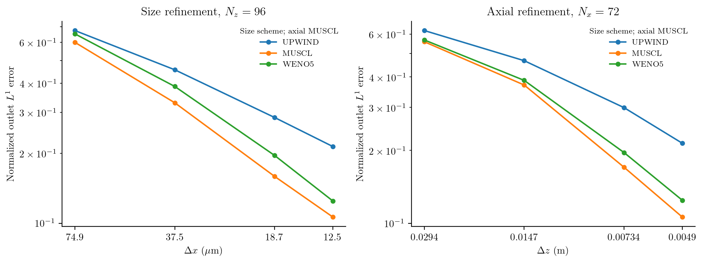

Precipitation in a continuous tubular reactor
A supersaturated feed enters a tube that initially contains no solute or particles. Nuclei form as the feed advances, crystals grow, and precipitation reduces the dissolved concentration. Axial dispersion spreads the residence-time distribution. The outlet PSD therefore depends on both reaction kinetics and mixing along the tube; a well-mixed batch model cannot describe its startup.
This calculation uses Case 7A of Zhang et al. (2024). It targets the transient fields and outlet distributions in Figure 9(a,c) and the error-versus-runtime comparison in Figure 10(a,b). It compares this package's Upwind, MUSCL and uniform-size WENO5 reconstructions. These are not CADET's WENO23/WENO35 algorithms, boundary closures or timings. Case 7B is not included: the printed lognormal centre needs an unambiguous conversion to SI units before it can be used as a reproduction input.
Model and boundaries
Let $n(x,z,t)$ be number density per reactor-fluid volume per particle length, $c(z,t)$ dissolved concentration, $x$ particle length and $z$ axial position. The particles obey
\[\frac{\partial n(x,z,t)}{\partial t} +v_{\mathrm{ax}}\frac{\partial n(x,z,t)}{\partial z} +\frac{\partial[G(z,t)n(x,z,t)]}{\partial x} =D_{\mathrm{ax}}\frac{\partial^2n(x,z,t)}{\partial z^2}.\]
Nucleation supplies the size-boundary flux
\[G(z,t)n(x_c,z,t)=B_0(z,t),\qquad B_0=k_p s^{u}+k_b s^{b}M,\qquad G=k_gs,\]
where
\[s(z,t)=\max\!\left(\frac{c(z,t)-c_{\mathrm{eq}}}{c_{\mathrm{eq}}},0\right), \qquad M(z,t)=\rho k_v\int_{x_c}^{\infty}x^3n(x,z,t)\,dx.\]
Primary nucleation starts the population. Secondary nucleation is proportional to the crystal mass concentration $M$. There is no aggregation, breakage or growth-rate dispersion in this case. Below saturation, both rates stop; this precipitation-only model does not redissolve existing particles. The solute balance is
\[\frac{\partial c(z,t)}{\partial t} +v_{\mathrm{ax}}\frac{\partial c(z,t)}{\partial z} =D_{\mathrm{ax}}\frac{\partial^2c(z,t)}{\partial z^2} -\rho k_v\left[B_0(z,t)x_c^3+ 3\int_{x_c}^{\infty}G(z,t)x^2n(x,z,t)\,dx\right].\]
Both balances use Danckwerts inflow and a zero-gradient outlet:
\[v_{\mathrm{ax}}n(x,0,t)-D_{\mathrm{ax}}\frac{\partial n(x,0,t)}{\partial z}=0, \qquad \frac{\partial n(x,L,t)}{\partial z}=0,\]
\[v_{\mathrm{ax}}c(0,t)-D_{\mathrm{ax}}\frac{\partial c(0,t)}{\partial z} =v_{\mathrm{ax}}c_{\mathrm{feed}}, \qquad \frac{\partial c(L,t)}{\partial z}=0.\]
Initially $n(x,z,0)=0$ and $c(z,0)=0$. Concentrations refer to local fluid volume, with no extra porosity factor in the exchange. The axial velocity is $Q/(A\varepsilon)$, not $Q/A$; porosity changes the residence time substantially.
| Input | Value and units |
|---|---|
| $c_{\mathrm{feed}}$, $c_{\mathrm{eq}}$ | 9, 0.4 kg m⁻³ |
| $\rho$, $k_v$ | 1200 kg m⁻³, 0.524 |
| $k_p$, $u$ | 5 m⁻³ s⁻¹, 10 |
| $k_b$, $b$ | 4×10⁸ kg⁻¹ s⁻¹, 2 |
| $k_g$ | 7×10⁻⁶ m s⁻¹ |
| $x_c$, $x_{\max}$ | 1, 900 µm |
| $Q$, $A$, $\varepsilon$ | 1.67×10⁻⁷ m³ s⁻¹, 1.46×10⁻⁴ m², 0.21 |
| $L$, $D_{\mathrm{ax}}$ | 0.47 m, 4.2×10⁻⁵ m² s⁻¹ |
These are supporting-information Table S8 inputs. The authors' public verification script confirms the empty initial state and porosity convention. Its flow uses exactly 10 mL/min; this script retains the SI table's rounded $Q$. The coefficients have the units above because $s$ is dimensionless.
Assemble local precipitation, then add axial transport
The kinetic callbacks read the local dissolved concentration. They do not need to know how the reactor is divided into cells:
supersaturation(p,ctx) = max(ctx.bulk.c/p.ceq-1,zero(ctx.bulk.c))
growth(x,p,t,ctx) = p.kg*supersaturation(p,ctx)
function nucleation(p,t,ctx)
s = supersaturation(p,ctx)
M = 1e12*p.rho*p.kv*moment(ctx.grid,ctx.N,3)
(p.kp*s^p.u + p.kb*s^p.b*M)/1e12
end
model = PBMModel(
growth=Growth(rate=growth),
primary_secondary=Nucleation(rate=nucleation,size=first(grid.edges)),
)
operator = compile(model,grid;methods=TermMethods(
growth=MUSCL(),by_term=(primary_secondary=BoundaryInjection(:left),)))
system = PBMSystem((crystals=operator,);nonnegative_bulk=(:c,),
exchanges=(ConservativeExchange(:crystals,:c,
(x,p,t,ctx)->1e12*p.rho*p.kv*x^3),))
local_problem = PBMProblem(system,(crystals=zeros(length(grid)),),(0.,200.);
bulk0=(c=0.,),p)
reactor = AxialDispersion(AxialGrid(range(0.,p.L;length=nz+1));
velocity=p.Q/(p.area*p.porosity),dispersion=p.Dax,
inlet=(p,t)->(populations=(crystals=zeros(length(grid)),),
bulk=(c=p.cfeed,)))
problem = axial_problem(local_problem,reactor;axial_scheme=MUSCL())For numerical scaling the internal particle counts are divided by $10^{12}$. The rate divides by that scale, the mass callback multiplies by it, and exported densities restore physical units. This changes no physical coefficient.
ConservativeExchange subtracts the resolved discrete crystal-mass increase from solute. This balances material exactly cell by cell before axial fluxes are added. At finite resolution it differs from separately quadraturing the continuum sink above, including the mass assigned to the first bin. On coarse uniform size meshes, a 1-µm nucleus is represented at a much larger first pivot; a higher-order growth reconstruction alone cannot eliminate that source/material error. That difference must shrink under size refinement; it is not evidence of a different physical source. The upper size boundary is closed. Check its occupancy before treating the finite-domain calculation as an approximation on an infinite size domain.
Startup and the outlet distribution

The four panels use a shared colour scale on a uniform 144-size-bin × 128-axial-cell mesh. The empty initial condition is shown explicitly. At 40 s the feed has raised supersaturation near the inlet; nucleation creates small particles and growth moves them to larger sizes. Solute depletion and axial mixing reshape the distribution downstream. The 80-s field still describes startup. The 200-s outlet is the comparison time used in the paper, not an analytical steady solution. Colours show number density per size and fluid volume in m⁻⁴, not bin populations. Horizontal bands are uniform-size bin averages displayed on a logarithmic size axis; the first bin spans 1–7.24 µm. They do not resolve sub-bin density structure.

These curves hold 72 uniform size bins fixed and vary the axial mesh. The left panel retains absolute number density. The right weights bin numbers by centre $x^3$ and normalizes by resolved volume; its integral over size in µm is one. Large particles carry more volume, so the two peaks need not coincide. A logarithmic display axis does not change the density's linear-size units. Lines through bin centres are visual guides. Axial numerical mixing changes the supersaturation history and therefore both outlet distributions. Here coarse axial meshes reduce the predicted number-density peak. The 96-cell volume-normalized curve lies close to the reference even while the absolute number peak differs appreciably. Volume normalization removes absolute number information; assess it alongside the left panel. The dashed curve is the finer reference below. The upper size boundary remains closed; the exported final-bin number fraction diagnoses occupancy, not domain convergence or positivity.
Refine size and axial resolution separately
Case 7 has no analytical coupled PSD solution. The SI's analytical DPFR solution belongs to Case 6, a first-order reaction problem. Following Eq. 49, the normalized distribution difference is
\[E_{L^1}= \frac{\sum_i\Delta x_i\left|n_i-n_i^{\mathrm{ref}}\right|} {\sum_i\Delta x_i n_i^{\mathrm{ref}}}.\]
An error of 0.1 means 10%. To compare different meshes, we integrate their piecewise-constant densities on the union of their edges. This preserves bin numbers; it differs from the paper's spline interpolation. Every comparison, including the supplementary logarithmic-size runs, now uses one common uniform-size numerical reference, rather than a different target for each size-mesh family. Even exact bin integrals on two different meshes define different piecewise-constant densities. This norm includes that representation difference as well as evolution error; it is not a test of fifth-order face reconstruction in isolation.
The reference uses WENO5 in size, MUSCL axially and RK4 in time on 144 × 128 cells. WENO5 requires uniform size spacing. On the checked startup meshes, WENO5 in both directions fails the negative-bulk check during empty-reactor startup, including after a tenfold step reduction; those failed checks remain visible. We therefore do not call this a WENO5/WENO5 reference or infer high accuracy from the scheme name alone. The size and axial checks below quantify its remaining resolution dependence.
All comparison runs use RK4 and axial MUSCL, varying only size reconstruction among Upwind, MUSCL and WENO5. The primary study has two four-point paths:
- Size refinement: $N_x=12,24,48,72$, with $N_z=96$ fixed.
- Axial refinement: $N_z=16,32,64,96$, with $N_x=72$ fixed.
The shared endpoint is solved once. Four logarithmic-size MUSCL runs at $N_x=12,24,36,48$ and $N_z=64$ remain in the downloadable results as a mesh-family sensitivity check. WENO5 is not applied to that nonuniform mesh.

Smaller $\Delta x$ or $\Delta z$ lies to the right. Each line changes one resolution only. Flattening or nonmonotonic errors can occur when the other coordinate, finite first-bin source deposition, or reference error is limiting; these are not isolated smooth-advection order tests. In particular, refining only axial transport cannot remove coarse size-space source/material error. At 72 × 96, the measured differences are about 21.4% (Upwind), 10.6% (MUSCL) and 12.5% (WENO5). MUSCL being closer than WENO5 on these meshes does not establish a higher formal order: this coupled, boundary-nucleated problem includes source deposition, spatial reconstruction and a finite reference, whose separate mesh changes are still about 6%.

Numbers beside markers give the refined cell count. Lines connect increasing resolution along each path; they are not Pareto fronts or a claim that runtime must be monotone. A work plot that combines a Cartesian product of size and axial meshes can hide this: an expensive, axially fine but size-coarse run can be less accurate than a cheaper run with a better size mesh. Separating those paths makes that distinction inspectable. Step counts also change with the coupled solution: along the Upwind size path they are 8,936, 8,915, 6,705 and 8,717, rather than a fixed count per mesh. The state-dependent step bounds therefore contribute to nonmonotone costs. Single-run timing noise also matters for small differences.
Check the numerical reference and cost
The driver uses a step bound of 0.3 divided by the sum of size-advection, axial-advection and axial-diffusion rates, an additional local solute-depletion bound, and a 0.25-s cap. RK4 stages keep the existing $10^{-8}$ state-check tolerance; values are never clipped. This is a state-dependent benchmark step controller, not an adaptive-error solver or a positivity guarantee.
The reference checks halve the step-control fraction, reduce only size resolution to 108 bins, and reduce only axial resolution to 96 cells. Differences below are diagnostics, not upper error bounds. Spatial agreement must be assessed alongside temporal agreement before interpreting small method differences.
| Check | Size × axial | Normalized difference |
|---|---|---|
| time half | 144 × 128 | 5.46e-14 |
| size grid | 108 × 128 | 0.066 |
| axial grid | 144 × 96 | 0.0577 |
The transient temporal checks compare the same mesh at 40, 80 and 200 s. The whole-field number difference uses $\sum_{ij}\Delta z_j|N_{ij}^{\mathrm{half}}-N_{ij}|$ divided by $\sum_{ij}\Delta z_jN_{ij}$; the bin numbers already include size widths. The largest field difference is $2.6\times10^{-8}$, the largest outlet difference $5.0\times10^{-7}$, and the largest bulk-concentration difference $1.3\times10^{-8}$ kg m⁻³. Startup differences exceed those at 200 s, which is why the late outlet check alone is insufficient. These checks support small time error at this mesh, while the separate spatial changes remain about 6%.
Each timing is one measured solve after a separate small compilation warmup. It includes stepping, step selection, checks and saved states, excluding problem assembly, export and plotting. The reference saves 0, 40, 80 and 200 s; comparison runs save 200 s only. These are package timings, not CADET timings. The uniform reference and refinement runs finished before other Julia jobs started. Logarithmic-mesh sensitivity runtimes overlapped later checks and inference; they are recorded in the CSV but excluded from the work plots and representative timing table.
Julia 1.10.3; CPU 13th Gen Intel(R) Core(TM) i9-13900H; Julia threads 1; BLAS threads 1.
| Role | Size / axial scheme | Size × axial | Steps | Seconds |
|---|---|---|---|---|
| reference | weno5 / muscl | 144 × 128 | 12475 | 149.0 |
| comparison | upwind / muscl | 72 × 96 | 8717 | 39.3 |
| comparison | muscl / muscl | 72 × 96 | 9133 | 79.2 |
| comparison | weno5 / muscl | 72 × 96 | 8665 | 46.3 |
Verification settings, all errors and timings, and reference outlet bin densities are retained. These finite references leave spatial and size-domain uncertainty; no full-horizon coupled analytical accuracy claim is made.
julia --project=. examples/continuous_precipitation.jl
python docs/benchmarks/plot_new_case_studies.py precipitation --usetex
# Larger study; separate output, not executed for these figures:
julia --project=. -e 'include("examples/continuous_precipitation.jl"); ContinuousPrecipitation.run_benchmark(full=true, output="/tmp/precipitation-full")'The larger option uses the SI reference arrangement $(250,750)$ and all 25 pairs of $N_x=(12,25,50,100,200)$ with $N_z=(37,75,150,300,600)$ per eligible size scheme/grid family. Axial MUSCL and RK4 remain fixed, unlike the paper's same-scheme-in-both-directions CADET study. It is an arrangement for further package refinement, not a reproduction of CADET's WENO23/WENO35 or boundary closures. Fine logarithmic meshes can make explicit integration expensive.
Minimal run and full reproduction
Run this block from the repository root. It constructs and solves one problem; including a driver does not run its CSV exports.
using PopulationBalanceModels
include("examples/continuous_precipitation.jl")
problem = ContinuousPrecipitation.build(; nx=24, nz=32, mesh=:log,
scheme=MUSCL(), axial_scheme=MUSCL())
solution = ContinuousPrecipitation.advance(problem, [0.0, 40.0, 80.0, 200.0]; method=RK4())
outlet = population(problem, last(solution.u), :crystals)[:, end]
concentration = bulk(problem, last(solution.u), :c)The figure-generation drivers and supporting sources are available below. Keep the repository's relative paths; the benchmark guide lists plotting commands and optional environments.